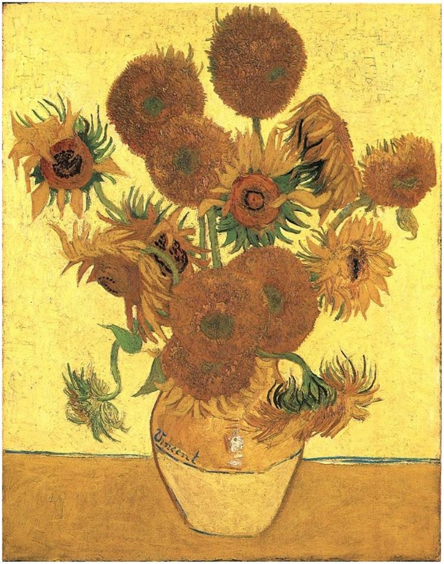

Vincent Van Gogh was a Dutch post-impressionist painter who was known for the beauty, emotion, and color in his work. Although Van Gogh produced more than 2,000 pieces of artwork, some of his most famous works include: The Potato Eaters, Sunflowers, The Starry Night, and Almond Blossoms. Today, Van Gogh's works are housed in Amsterdam at the Van Gogh Museum.